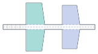

Cut + fold
Butterflies
Choose a butterfly, color its wings and fold the leading edges underneath. Slide two clips onto the long head, then match the wingtip heights.

The paper flight workshop
Free for kids aged 5–12 and their grown-ups. Start with a plain sheet for an airplane or ring glider. For a butterfly, add scissors and two paper clips. The maple spinner uses one clip. No account needed.
Choose a design
The collection
Start with the materials you have. Every design opens at the worktable.
Cut + fold
Choose a butterfly, color its wings and fold the leading edges underneath. Slide two clips onto the long head, then match the wingtip heights.
One sheet per airplane
Fold a plain sheet whole. If you use the starter PDF, cut along its thick border with scissors before folding.

Glide and spin
Roll a sheet into a ring, drop a paper maple seed, or fold a glider with two pairs of wings. Which one spins on the way down?

For families and classrooms
Page 3 lists your models and their page numbers. On page 4, mark five landings, change one fold and try five more. Download your book free for A4 or US Letter.
Look inside on page 4 ↗Side by side
Compare the wings, materials and folds of two designs. Print a scorecard and mark where each one first touches the floor.
At the kitchen table or in class
Pick a landing spot. Predict what will happen. Try a gentle glide, change one thing and launch again from the same place.
Take the family lesson ↗Let a grown-up help with scissors or a tight crease. Point to where you think the glider will land.
Draw your prediction and compare two settings. Which changed where the glider landed?
Ask what the next flight could tell you. Let the builder choose the next change.
Open library
Print one copy first. Measure the 50 mm line with a ruler. If it comes out short or long, choose Actual size (100%) in the print dialog and try again before printing a class set.
Choose the design and the paper in your printer.
Use 120 g/m² paper and two 33 mm clips.
Motor lab
See the original phone-controlled module, explore the parts of an open alternative, and print a fit model to try on a paper airplane.